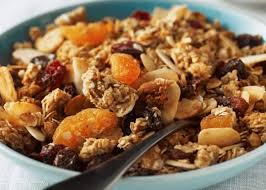

Iogurte com granola caseira
Uma alternativa caseira e versátil para acompanhar iogurtes, frutas e outras preparações.
Fácil de fazer, combina ingredientes que fornecem fibras, carboidratos e gorduras.
Ingredientes
- 150g de farelo de aveia
- 30g de mel ou melado
- 30g de uva passa
- 15g de coco ralado sem açúcar
- 15g de cacau em pó 70% (opcional)
- 13ml de azeite de oliva
Modo de preparo
- Em um recipiente, misture o farelo de aveia, o coco ralado e o cacau em pó.
- Acrescente o mel ou melado e o azeite de oliva, misturando até incorporar bem os ingredientes.
- Distribua a mistura em uma assadeira, formando uma camada uniforme.
- Leve ao forno preaquecido a 160 °C até dourar levemente, mexendo ocasionalmente para assar por igual.
- Retire do forno, deixe esfriar completamente e acrescente as uvas-passas.
- Armazene em um pote limpo, seco e bem fechado.
Informações nutricionais
Porção de 20 g:
- Valor energético: 64,5 kcal
- Carboidratos: 12,5 g
- Proteínas: 2,4 g
- Gorduras totais: 2,5 g
- Fibras alimentares: 2,2 g
Receita completa:
- Valor energético: 815 kcal
- Carboidratos: 158 g
- Proteínas: 30 g
- Gorduras totais: 35 g
- Fibras alimentares: 29 g
Os valores nutricionais são estimativas e podem variar conforme as marcas e os ingredientes utilizados.
← Voltar